MYSQL-多表查询
1.多表关系
项目开发中，在进行数据库表结构设计时，会根据业务需求及业务模块之间的关系，分析并设计表结构，由于业务之间相互关联，所以各个表结构之间也存在着各种联系，基本上分为三种:
一对多（多对一）
案例：部门与员工的关系
关系：一个部门对应多个员工，一个员工对应一个部门
实现：在多的一方建立外键，指向一的一方的主键
多对多
案例：学生和课程的关系
关系：一个学生可以选修多门课程，一门课程也可以供多个学生选择
实现：建立第三张中间表，中间表至少包含两个外键，分别关联两方主键
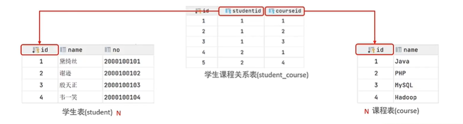
一对一
案例:用户与用户详情的关系
关系:一对一关系，多用于单表拆分，将一张表的基础字段放在一张表中，其他详情字段放在另一张表中，以提升操作效率
实现:在任意一方加入外键，关联另外一方的主键，并且设置外键为唯一的(UNIQUE)
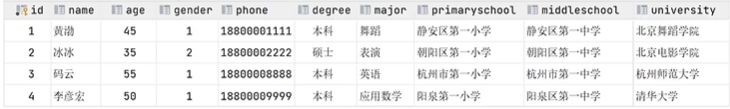
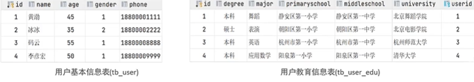
2.多表查询概述
概述:指从多张表中查询数据
多表查询分类：
连接查询
内连接：相当于查询A、B交集部分数据（两表之间的交集数据）
外连接：左外连接:查询左表所有数据，以及两张表交集部分数据 右外连接:查询右表所有数据，以及两张表交集部分数据
自连接：当前表与自身的连接查询，自连接必须使用表别名
子查询
内连接
1 | # 隐式内连接 |
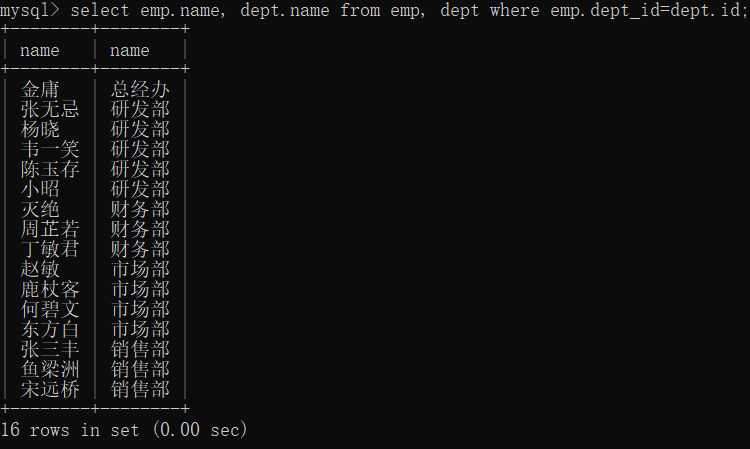
外连接
1 | # 左外连接 |

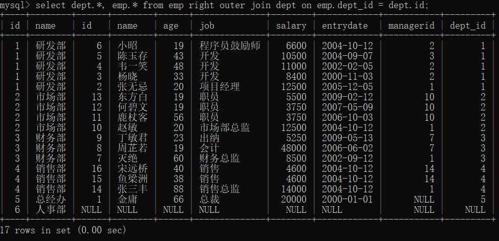
自连接
自链接查询可以是内连接查询也可以是外连接查询
1 | select 字段列表 from 表a 别名a join 表a 别名b on 条件; |
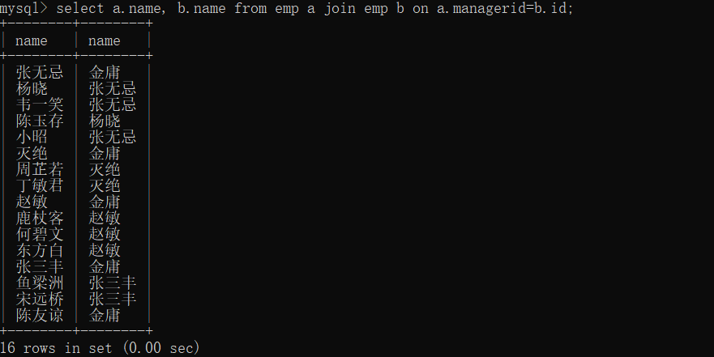
子查询：
概念：SQL语句中嵌套select语句为嵌套查询，又称子查询
1 | select * from 表1 where 字段=(select 字段 from 表2); |
子查询外的语句可以是insert、update、delete、select中的一个
根据子查询的结构不同，分为：
标量子查询：子查询结果为一个单个值
常用符号：=、<>、>、>=、<、<=
1
2
3
4
5
6
7
8# 根据销售部门的id查询员工信息
# 先分开查询
# 查询销售部门的id
select id from dept where name='销售部'; #id为4
# 查询销售部门中员工的信息
select * from emp where dept_id=4;
# 合并为一个查询
select * from emp where dept_id=(select dept.id from dept where dept.name='销售部' );列子查询：子查询的结果为一列
常用操作符：
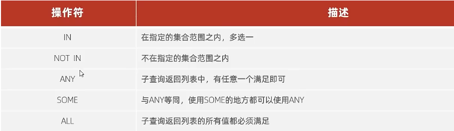
1
2
3
4
5
6
7
8# 列子查询
# 查询销售部和市场部的所有员工信息
# 查询销售部和市场部的id
select id from dept where name='销售部' or name='市场部'; #id为2 4
# 查询两个部门的所有员工
select * from emp where dept_id in (2,4);
# 合并
select * from emp where dept_id in (select id from dept where name='销售部' or name='市场部');行子查询：子查询的结果为一行
常用操作符：=、<>、in、not in
1
2
3
4
5
6# 查询与张无忌的薪资及直属领导相同的员工信息
# 查询张无忌的薪资和直属领导
select salary, managerid from emp where name='张无忌';
# 查询与张无忌的薪资及直属领导相同的员工信息
select * from emp where (salary,managerid)=(select salary, managerid from emp where name='张无忌');表子查询：查询结果为多行多列5
多表查询案例
常用操作符：in
1
#询与鹿杖客和宋远桥的职位和薪资相同的员工信息select * from emp where (job, salary) in ( select job, salary from emp where name in ('鹿杖客', '宋远桥'));
表子查询的子表作为临时表
1
2
3
4# 查询入职日期是’2006-01-01‘之后的员工信息和部门信息
# 先查询出入职在’2006-01-01‘之后员工的所有信息
# 与部门表左连接
select e.*, dept.* from (select * from emp where entrydate>'2006-01-01') e left outer join dept on e.dept_id=dept.id;
多表查询操作：
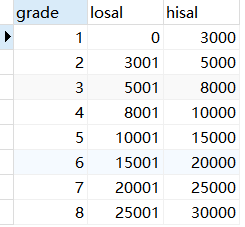
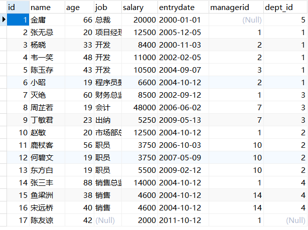
1.查询员工的姓名，年龄，职位，部门信息(隐式内连接)
1 | select e.name,e.age,e.job,d.* from emp e,dept d where e.dept_id=d.id; |
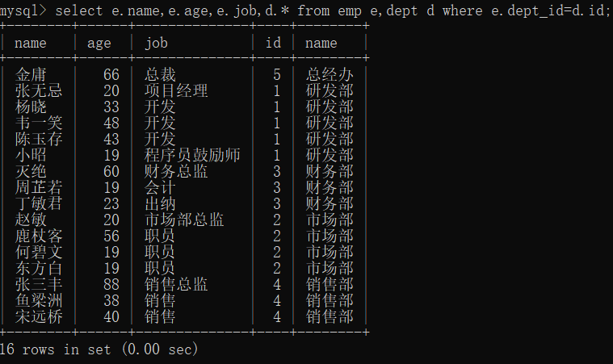
2.查询年龄小于30的员工的姓名，年龄，职位，部门信息（显式内连接）
1 | select emp.name,emp.age,emp.job,dept.* from emp inner join dept on emp.dept_id = dept.id where emp.age<30; |
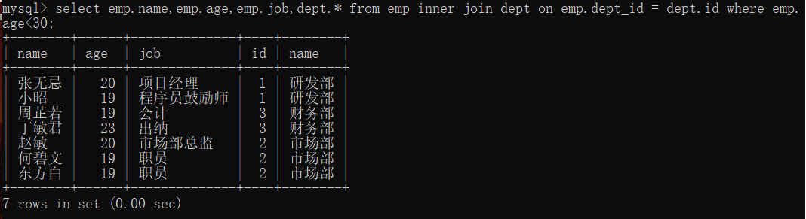
3.查询拥有员工的部门id，部门名称
1 | select distinct d.id,d.name |
4.查询所有年龄大于40的员工，及其归属部门名称，如果员工没有分配部门也要显示
1 | select e.*,d.name |
5.查询所有员工的工资等级
1 | select e.*,s.grade |
6.查询研发部所有员工的信息即工资等级
1 | select e.*,s.grade |
7.查询研发部员工的平均工资
1 | select avg(e.salary) |
8.查询工资比灭绝高的员工信息
1 | select * |
9.查询比平均薪资高的员工信息
1 | select * |
10.查询低于本部门平均工资的员工信息
1 | select * |
11.查询所有部门信息，并统计部门的员工人数
1 | select d.*, ( |